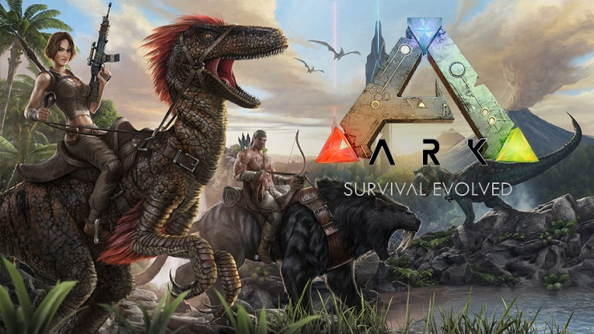
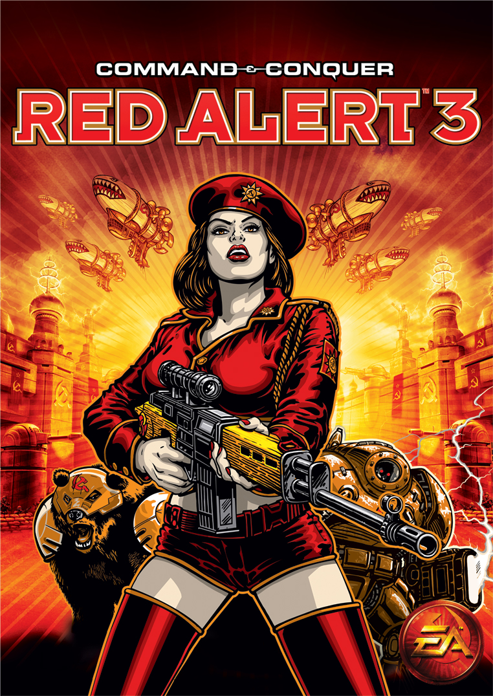
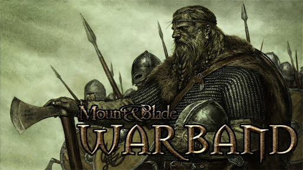

Video Games
I am an all-around gamer, I tend to play differnt genres of games, and as much as possible I want to appreciate and experience the games that I get to play, I started playing games when I wasa just in elementary playing super mario. and we can observe how much the graphics, the plot and how the system requirements have changed throughout the years. So here are some of my favorite games:




Computer
The next one is the Computer, ever sincce I was a child I have always thought about how computer works and so I was exposed to the hardware and software side of the computer when I was a child. I still remember the old PC's with the CRT monitor's, the dial-up internet connection sound, the starting sound of microsoft vista. Up until now, computer parts still pique my interest and that it will now become a part of my everyday life, especially someday that is the career path that I will be taking. So here are some of the brands that I love: